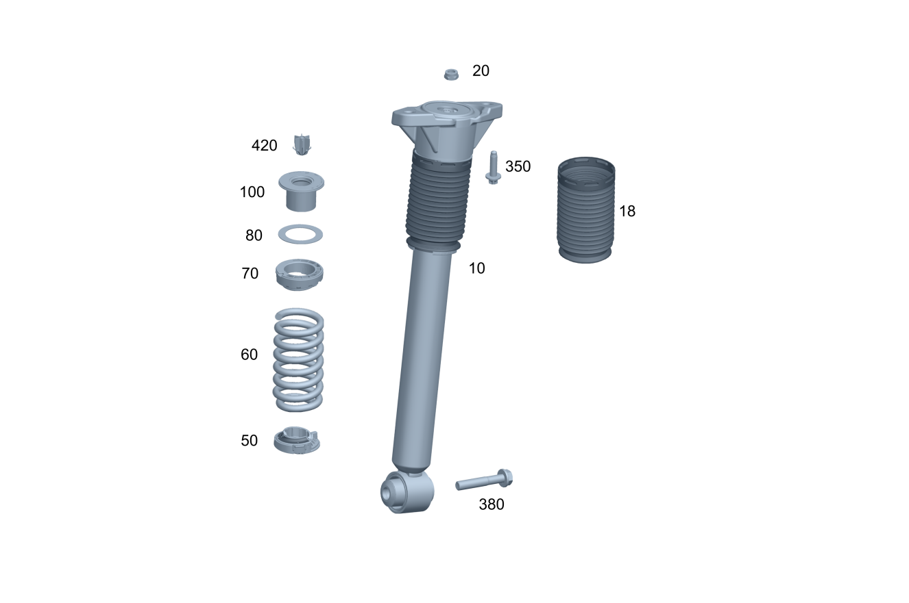

| № | Артикул | Название | Кол. | Примечание | Ограничение |
|---|---|---|---|---|---|
| 10 | A 167 320 25 01 | Амортизатор (STOSSDAEMPFER) | 1 | Сзади слева | |
| 10 | A 167 320 02 30 | Амортизатор (STOSSDAEMPFER) | 1 | Сзади слева | 491 |
| 10 | A 167 320 23 01 | Амортизатор (STOSSDAEMPFER) | 1 | Сзади слева | 215+489/M264+215+489+(460/494/830) |
| 10 | A 167 320 23 01 | Амортизатор (STOSSDAEMPFER) | 1 | Сзади слева | 215+489/(M264/M254)+215+489+(460/494/830) |
| 10 | A 167 320 23 01 | Амортизатор (STOSSDAEMPFER) | 1 | Сзади слева | 215+489/(M254)+215+489+(460/494/830) |
| 10 | A 167 320 61 04 | Амортизатор (STOSSDAEMPFER) | 1 | Сзади слева | 490+489 |
| 10 | A 167 320 14 06 | Амортизатор (STOSSDAEMPFER) | 1 | Сзади слева | 489+215+(807/808) |
| 10 | A 167 320 70 06 | Амортизатор (STOSSDAEMPFER) | 1 | Сзади слева | 491+(807/808) |
| 10 | A 167 320 09 05 | Амортизатор (STOSSDAEMPFER) | 1 | Сзади слева [697] ДЕТАЛЬ ПОСТАВЛЯЕТСЯ ТОЛЬКО/ИЛИ ТАКЖЕ КАК ЗАП.ЧАСТЬ | 490+489+(807/808) |
| 10 | A 167 320 26 01 | Амортизатор (STOSSDAEMPFER) | 1 | Справа сзади | |
| 10 | A 167 320 44 00 | Амортизатор (STOSSDAEMPFER) | 1 | Справа сзади | 491 |
| 10 | A 167 320 22 01 | Амортизатор (STOSSDAEMPFER) | 1 | Справа сзади | 215+489/M264+215+489+(460/494/830) |
| 10 | A 167 320 22 01 | Амортизатор (STOSSDAEMPFER) | 1 | Справа сзади | 215+489/(M264/M254)+215+489+(460/494/830) |
| 10 | A 167 320 22 01 | Амортизатор (STOSSDAEMPFER) | 1 | Справа сзади | 215+489/(M254)+215+489+(460/494/830) |
| 10 | A 167 320 62 04 | Амортизатор (STOSSDAEMPFER) | 1 | Справа сзади | 490+489 |
| 10 | A 167 320 00 07 | Амортизатор (STOSSDAEMPFER) | 1 | Справа сзади | 489+215+(807/808) |
| 10 | A 167 320 78 06 | Амортизатор (STOSSDAEMPFER) | 1 | Справа сзади | 491+(807/808) |
| 10 | A 167 320 10 05 | Амортизатор (STOSSDAEMPFER) | 1 | Справа сзади [697] ДЕТАЛЬ ПОСТАВЛЯЕТСЯ ТОЛЬКО/ИЛИ ТАКЖЕ КАК ЗАП.ЧАСТЬ | 490+489+(807/808) |
| 15 | A 167 326 00 64 | - Подпятник (STUETZLAGER) | 2 | Слева и справа сзади | 490 |
| 15 | A 167 326 20 01 | - Подпятник (STUETZLAGER) | 2 | Слева и справа сзади | 490 |
| 15 | A 167 326 20 01 | - Подпятник (STUETZLAGER) | 2 | Слева и справа сзади | 490+489+(807/808) |
| 18 | A 167 326 01 98 | - Защитная труба амортизат. (SCHUTZROHR STOSSDAEMPFER) | 2 | ||
| 18 | A 167 326 87 00 | - Гофрированный чехол (FALTENBALG) | 2 | 490 | |
| 18 | A 167 326 01 98 | - Защитная труба амортизат. (SCHUTZROHR STOSSDAEMPFER) | 2 | 807/808 | |
| 18 | A 167 326 87 00 | - Гофрированный чехол (FALTENBALG) | 2 | 490+(807/808) | |
| 20 | N 910123 010000 | - Шестигранная гайка (SECHSKANTMUTTER) | 2 | Слева и справа сзади; M10X1 | |
| 25 | A 004 994 18 45 | - SPRING NUT (FEDERMUTTER) | 4 | Слева и справа сзади; M8 | 490 |
| 30 | A 167 540 49 20 | - Электрический жгут (ELEKTRISCHER LEITUNGSSATZ) | 1 | Сзади слева | 490 |
| 30 | A 167 540 50 20 | - Электрический жгут (ELEKTRISCHER LEITUNGSSATZ) | 1 | Справа сзади | 490 |
| 35 | A 001 995 19 90 | - Кабельная стяжка (KABELBAND) | 2 | Кронштейн к кабельной разводке на мосту; 5X300 MM | 490 |
| 40 | N 000000 006341 | - Винт с 6-гр. глвк (SECHSRUNDSCHRAUBE) | 4 | Кабельный канал к бамперу | 490 |
| 50 | A 167 326 13 00 | Тарелка пружины (FEDERTELLER) | 2 | Снизу слева и справа | |
| 60 | A 167 324 09 00 | Винтовая пружина (SCHRAUBENFEDER) | 2 | Цветовая маркировка: 1 x желтый [002819] ПРИ ЗАМЕНЕ ПРУЖИНЫ(РЕССОРЫ) В ОБЯЗАТЕЛЬНОМ ПОРЯДКЕ ЗАМЕНЯТЬ ТАКЖЕ НИЖНЮЮ ПРОКЛАДКУ [003811] ПРИ ЗАМЕНЕ ПРУЖИНЫ(РЕССОРЫ) В ОБЯЗАТЕЛЬНОМ ПОРЯДКЕ ЗАМЕНЯТЬ ТАКЖЕ СРЕДНЮЮ ПРОКЛАДКУ (ВВЕРХУ) A 205 324 04 84 | |
| 60 | A 167 324 10 00 | Винтовая пружина (SCHRAUBENFEDER) | 2 | Цветовая маркировка: 2 x жёлтый [002819] ПРИ ЗАМЕНЕ ПРУЖИНЫ(РЕССОРЫ) В ОБЯЗАТЕЛЬНОМ ПОРЯДКЕ ЗАМЕНЯТЬ ТАКЖЕ НИЖНЮЮ ПРОКЛАДКУ [003811] ПРИ ЗАМЕНЕ ПРУЖИНЫ(РЕССОРЫ) В ОБЯЗАТЕЛЬНОМ ПОРЯДКЕ ЗАМЕНЯТЬ ТАКЖЕ СРЕДНЮЮ ПРОКЛАДКУ (ВВЕРХУ) A 205 324 04 84 | |
| 60 | A 167 324 11 00 | Винтовая пружина (SCHRAUBENFEDER) | 2 | Цветовая маркировка: 3 x жёлтый [002819] ПРИ ЗАМЕНЕ ПРУЖИНЫ(РЕССОРЫ) В ОБЯЗАТЕЛЬНОМ ПОРЯДКЕ ЗАМЕНЯТЬ ТАКЖЕ НИЖНЮЮ ПРОКЛАДКУ [003811] ПРИ ЗАМЕНЕ ПРУЖИНЫ(РЕССОРЫ) В ОБЯЗАТЕЛЬНОМ ПОРЯДКЕ ЗАМЕНЯТЬ ТАКЖЕ СРЕДНЮЮ ПРОКЛАДКУ (ВВЕРХУ) A 205 324 04 84 | |
| 60 | A 167 324 12 00 | Винтовая пружина (SCHRAUBENFEDER) | 2 | Цветовая маркировка: 4 x жёлтый [002819] ПРИ ЗАМЕНЕ ПРУЖИНЫ(РЕССОРЫ) В ОБЯЗАТЕЛЬНОМ ПОРЯДКЕ ЗАМЕНЯТЬ ТАКЖЕ НИЖНЮЮ ПРОКЛАДКУ [003811] ПРИ ЗАМЕНЕ ПРУЖИНЫ(РЕССОРЫ) В ОБЯЗАТЕЛЬНОМ ПОРЯДКЕ ЗАМЕНЯТЬ ТАКЖЕ СРЕДНЮЮ ПРОКЛАДКУ (ВВЕРХУ) A 205 324 04 84 | |
| 60 | A 167 324 13 00 | Винтовая пружина (SCHRAUBENFEDER) | 2 | Цветовая маркировка: 5 x жёлтый [002819] ПРИ ЗАМЕНЕ ПРУЖИНЫ(РЕССОРЫ) В ОБЯЗАТЕЛЬНОМ ПОРЯДКЕ ЗАМЕНЯТЬ ТАКЖЕ НИЖНЮЮ ПРОКЛАДКУ [003811] ПРИ ЗАМЕНЕ ПРУЖИНЫ(РЕССОРЫ) В ОБЯЗАТЕЛЬНОМ ПОРЯДКЕ ЗАМЕНЯТЬ ТАКЖЕ СРЕДНЮЮ ПРОКЛАДКУ (ВВЕРХУ) A 205 324 04 84 | |
| 60 | A 167 324 08 00 | Винтовая пружина (SCHRAUBENFEDER) | 2 | Цветовая маркировка: 1 x синий / 1 x синий [002819] ПРИ ЗАМЕНЕ ПРУЖИНЫ(РЕССОРЫ) В ОБЯЗАТЕЛЬНОМ ПОРЯДКЕ ЗАМЕНЯТЬ ТАКЖЕ НИЖНЮЮ ПРОКЛАДКУ [003811] ПРИ ЗАМЕНЕ ПРУЖИНЫ(РЕССОРЫ) В ОБЯЗАТЕЛЬНОМ ПОРЯДКЕ ЗАМЕНЯТЬ ТАКЖЕ СРЕДНЮЮ ПРОКЛАДКУ (ВВЕРХУ) A 205 324 04 84 | |
| 60 | A 167 324 19 00 | Винтовая пружина (SCHRAUBENFEDER) | 2 | Цветовая маркировка: 1 x зеленый [002819] ПРИ ЗАМЕНЕ ПРУЖИНЫ(РЕССОРЫ) В ОБЯЗАТЕЛЬНОМ ПОРЯДКЕ ЗАМЕНЯТЬ ТАКЖЕ НИЖНЮЮ ПРОКЛАДКУ [003811] ПРИ ЗАМЕНЕ ПРУЖИНЫ(РЕССОРЫ) В ОБЯЗАТЕЛЬНОМ ПОРЯДКЕ ЗАМЕНЯТЬ ТАКЖЕ СРЕДНЮЮ ПРОКЛАДКУ (ВВЕРХУ) A 205 324 04 84 | 491 |
| 60 | A 167 324 20 00 | Винтовая пружина (SCHRAUBENFEDER) | 2 | Цветовая маркировка: 2 x зелёный [002819] ПРИ ЗАМЕНЕ ПРУЖИНЫ(РЕССОРЫ) В ОБЯЗАТЕЛЬНОМ ПОРЯДКЕ ЗАМЕНЯТЬ ТАКЖЕ НИЖНЮЮ ПРОКЛАДКУ [003811] ПРИ ЗАМЕНЕ ПРУЖИНЫ(РЕССОРЫ) В ОБЯЗАТЕЛЬНОМ ПОРЯДКЕ ЗАМЕНЯТЬ ТАКЖЕ СРЕДНЮЮ ПРОКЛАДКУ (ВВЕРХУ) A 205 324 04 84 | 491 |
| 60 | A 167 324 21 00 | Винтовая пружина (SCHRAUBENFEDER) | 2 | Цветовая маркировка: 3 x зелёный [002819] ПРИ ЗАМЕНЕ ПРУЖИНЫ(РЕССОРЫ) В ОБЯЗАТЕЛЬНОМ ПОРЯДКЕ ЗАМЕНЯТЬ ТАКЖЕ НИЖНЮЮ ПРОКЛАДКУ [003811] ПРИ ЗАМЕНЕ ПРУЖИНЫ(РЕССОРЫ) В ОБЯЗАТЕЛЬНОМ ПОРЯДКЕ ЗАМЕНЯТЬ ТАКЖЕ СРЕДНЮЮ ПРОКЛАДКУ (ВВЕРХУ) A 205 324 04 84 | 491 |
| 60 | A 167 324 22 00 | Винтовая пружина (SCHRAUBENFEDER) | 2 | Цветовая маркировка: 4 x зелёный [002819] ПРИ ЗАМЕНЕ ПРУЖИНЫ(РЕССОРЫ) В ОБЯЗАТЕЛЬНОМ ПОРЯДКЕ ЗАМЕНЯТЬ ТАКЖЕ НИЖНЮЮ ПРОКЛАДКУ [003811] ПРИ ЗАМЕНЕ ПРУЖИНЫ(РЕССОРЫ) В ОБЯЗАТЕЛЬНОМ ПОРЯДКЕ ЗАМЕНЯТЬ ТАКЖЕ СРЕДНЮЮ ПРОКЛАДКУ (ВВЕРХУ) A 205 324 04 84 | 491 |
| 60 | A 167 324 23 00 | Винтовая пружина (SCHRAUBENFEDER) | 2 | Цветовая маркировка: 5 x зелёный [002819] ПРИ ЗАМЕНЕ ПРУЖИНЫ(РЕССОРЫ) В ОБЯЗАТЕЛЬНОМ ПОРЯДКЕ ЗАМЕНЯТЬ ТАКЖЕ НИЖНЮЮ ПРОКЛАДКУ [003811] ПРИ ЗАМЕНЕ ПРУЖИНЫ(РЕССОРЫ) В ОБЯЗАТЕЛЬНОМ ПОРЯДКЕ ЗАМЕНЯТЬ ТАКЖЕ СРЕДНЮЮ ПРОКЛАДКУ (ВВЕРХУ) A 205 324 04 84 | 491 |
| 60 | A 167 324 31 00 | Винтовая пружина (SCHRAUBENFEDER) | 2 | Цветовая маркировка: 2 x синий [002819] ПРИ ЗАМЕНЕ ПРУЖИНЫ(РЕССОРЫ) В ОБЯЗАТЕЛЬНОМ ПОРЯДКЕ ЗАМЕНЯТЬ ТАКЖЕ НИЖНЮЮ ПРОКЛАДКУ [003811] ПРИ ЗАМЕНЕ ПРУЖИНЫ(РЕССОРЫ) В ОБЯЗАТЕЛЬНОМ ПОРЯДКЕ ЗАМЕНЯТЬ ТАКЖЕ СРЕДНЮЮ ПРОКЛАДКУ (ВВЕРХУ) A 205 324 04 84 | 491 |
| 70 | A 167 326 20 00 | Тарелка пружины (FEDERTELLER) | 2 | Сверху слева и справа | |
| 80 | A 167 324 24 00 | Прокладка рессоры (FEDERBEILAGE) | 2 | Сверху; выемка: 0; 2 MM | |
| 80 | A 167 324 25 00 | Прокладка рессоры (FEDERBEILAGE) | 2 | Верхн., выемка: 1; 5 MM | |
| 80 | A 167 324 26 00 | Прокладка рессоры (FEDERBEILAGE) | 2 | Верхн., выемка: 2; 10mm | |
| 100 | A 167 324 00 00 | Прокладка рессоры (FEDERBEILAGE) | 2 | Верхняя часть слева и справа | |
| 350 | N 000000 008957 | Винт с 6-гр. глвк (SECHSRUNDSCHRAUBE) | 4 | Амортизатор к кузову; M12X45 | |
| 350 | N 000000 008957 | Винт с 6-гр. глвк (SECHSRUNDSCHRAUBE) | 4 | Амортизатор к кузову; M12X45 | |
| 380 | A 000 990 47 03 | Винт с 6-гр.гол. и шайбой (KOMBI-SECHSKANTSCHRAUBE) | 2 | Амортизатор к поперечному рычагу (левая и правая сторона); M16X1.5X95 | |
| 380 | A 000 990 47 03 | Винт с 6-гр.гол. и шайбой (KOMBI-SECHSKANTSCHRAUBE) | 2 | Амортизатор к поперечному рычагу (левая и правая сторона); M16X1.5X95 | |
| 400 | A 167 320 00 25 | Пневморессора (LUFTFEDER) | 2 | Слева и справа сзади | 489/M177+M40+M036+215+489 |
| 400 | A 167 320 00 25 | Пневморессора (LUFTFEDER) | 2 | Слева и справа сзади | 489/M177+M40+(M036+215/M013/M013+215)+489 |
| 400 | A 167 320 00 25 | Пневморессора (LUFTFEDER) | 2 | Слева и справа сзади | (489/489+ME10/490)+(807/808) |
| 405 | A 167 327 35 00 | - Эластомерная манжета (ELASTOMERMANSCHETTE) | 2 | Пневмобаллон (левый и правый) | 489 |
| 410 | A 000 327 00 69 | - Соединительный штуцер (ANSCHLUSSSTUTZEN) | NB | Напорный трубопровод к пневмобаллону подвески | (489/490) |
| 420 | A 167 328 00 00 | Центрирующее кольцо (ZENTRIERRING) | 2 | Слева и справа сзади | |
| 420 | A 297 328 00 00 | Центрирующее кольцо (ZENTRIERRING) | 2 | Слева и справа сзади | |
| 760 | A 167 323 35 00 | Пылезащитный колпачок (STAUBSCHUTZKAPPE) | 4 | Слева и справа сзади | 490 |
| 900 | A 000 328 04 00 | Пневморессора (LUFTFEDER) | 4 | Ремонтный комплект заправочного клапана и пылезащитного колпачка | 490 |
| 910 | A 000 328 00 00 | - Соединительный штуцер (ANSCHLUSSSTUTZEN) | 4 | Заправочный клапан | 490 |
| 910 | A 000 328 01 00 | - Соединительный штуцер (ANSCHLUSSSTUTZEN) | 4 | Заправочный клапан | 490 |
| 920 | A 000 323 04 01 | - Пылезащитный колпачок (STAUBSCHUTZKAPPE) | 4 | 490 |
Позиций: 65 · подписано на схемах: 65 · колесо — плавный зум в курсор, перетаскивание — пан, двойной клик — зум, клик по артикулу — скопировать · наведите на строку или цифру на схеме — подсветка связки, клик — закрепить.